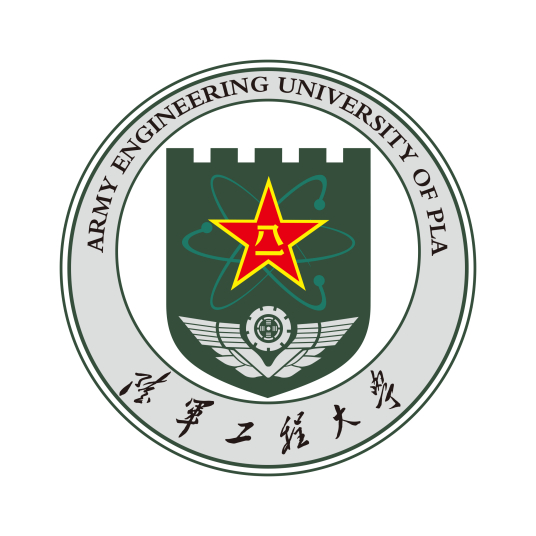

About this website
在我学了Django之后，很想实践一下，于是有了自己做一个博客的想法。 这个网站就是这么来的。 我拖了很久，之前被js吓到了，后面突然发现，作为主要干后端的事的我来说，完全不要虚js。 一开始我认为要用一门语言一定要把它学精了，但是现在我发现，其实，我只需要会用这门语言就行。 精这个东西本来就说不清楚，但语言只是个工具，我只需要能够用它达到我的目的就可以了。
在我学了Django之后，很想实践一下，于是有了自己做一个博客的想法。 这个网站就是这么来的。 我拖了很久，之前被js吓到了，后面突然发现，作为主要干后端的事的我来说，完全不要虚js。 一开始我认为要用一门语言一定要把它学精了，但是现在我发现，其实，我只需要会用这门语言就行。 精这个东西本来就说不清楚，但语言只是个工具，我只需要能够用它达到我的目的就可以了。